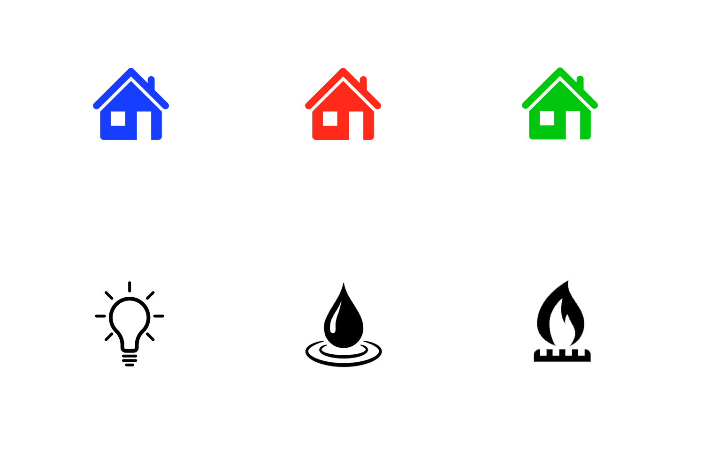
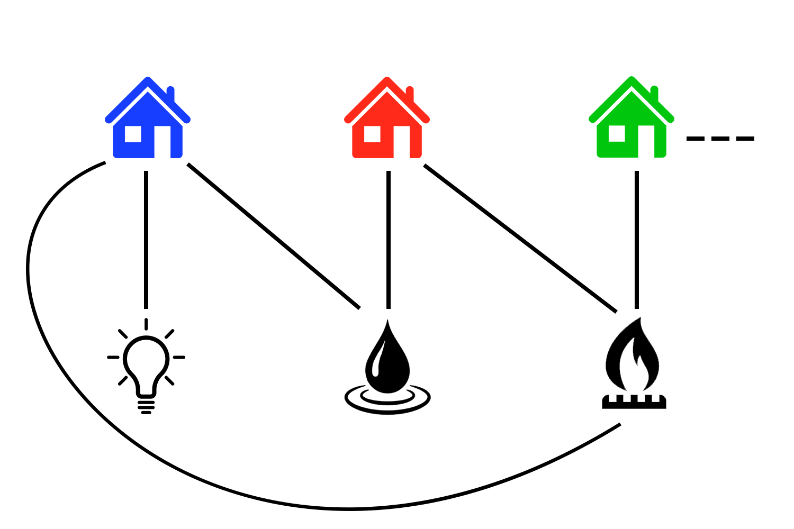

Tracer des graphes fascine autant les mathématiciens que les artistes (bien qu'ils ne s'intéressent pas exactement aux mêmes détails, il faut l'admettre). Aujourd'hui je voudrais vous présenter un problème auquel les mathématiciens ont trouvé une solution. . . originale.
En voici l'énoncé :
Vous êtes « ingénieur fil et tuyaux » dans un petit village constitué de 3 maisons. Chacune de ces 3 maisons doit être reliée aux 3 services principaux : eau, gaz et éléctricité. Pour éviter tout problème, vous convenez que les connexions ne doivent jamais se croiser.
NB : on travaille ici en 2D, les fils ne peuvent pas passer au-dessus ou en-dessous les uns des autres : ils doivent absolument se contourner.
Comme vous êtes aussi « mathématicien fil et tuyaux » vous vous rendez compte que c'est un problème de la théorie des graphes et vous commencez à faire un petit schéma.

Et commencez à essayer de relier les trois maisons aux trois services

Je vous encourage vivement à sortir une feuille de papier et à essayer pendant cinq minutes 😉. N'oubliez pas, les connexions ne doivent pas se croiser !